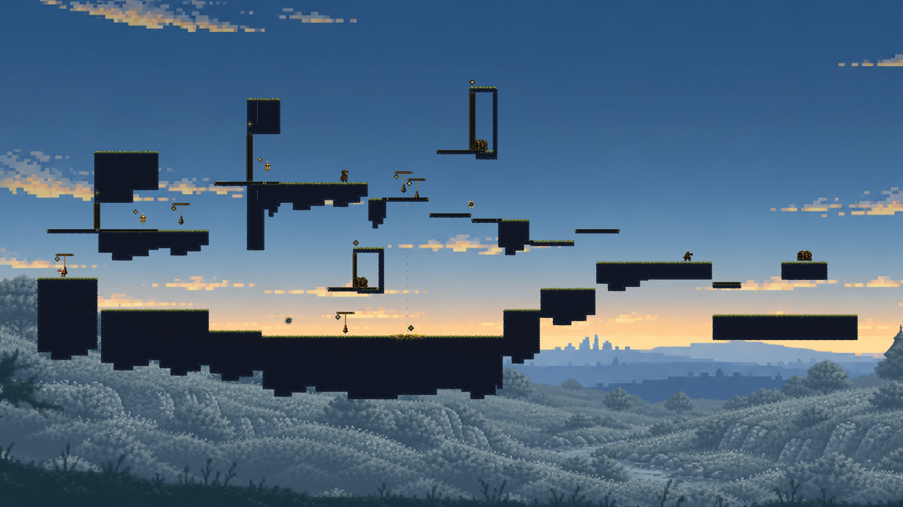
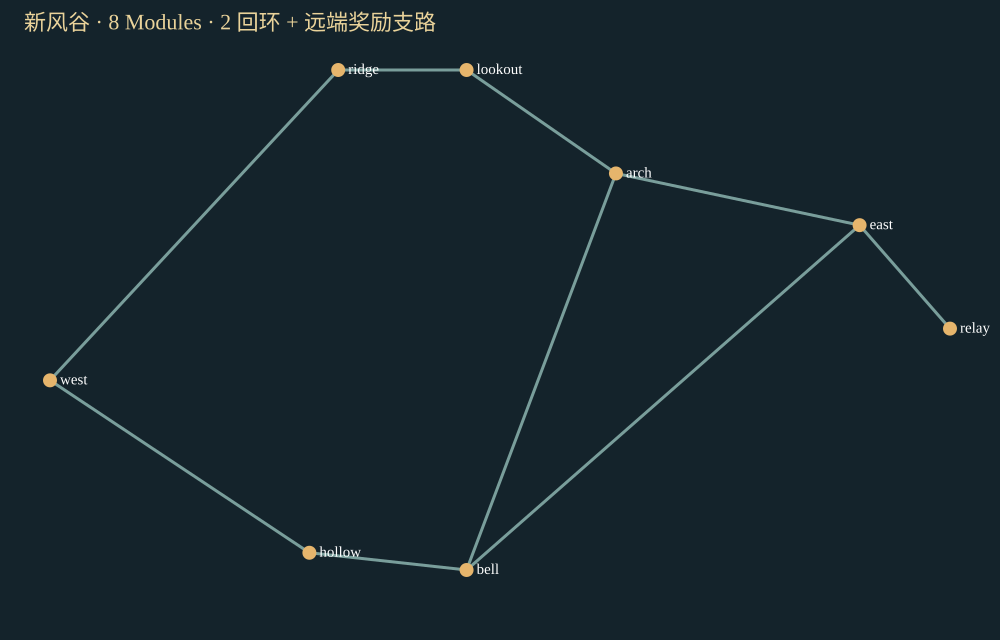

风铃平原 · 回声风谷
新地图的完整小区域：上下分路、东岸汇合、风铃升降捷径，以及东侧远端宝库。使用主游戏正式的32px Tile风格，所有可站立地形均来自Module直接拼装。
8 Modules · 2 回环3 宝箱 · 1 商人空中击铃 / 停靠 / 命中回充
打开 Godot 手动探索 · A/D移动，空格跳跃，鼠标松开射击，S下穿，E购买，M整图，R重试。
01 · 主线，约13秒
连续三次空中击铃，反冲和开门共同完成上层路线；悬桥门内有独占宝箱。新增局部岩盖，让门接入实际地形。
下载主线录像
02 · 谷底宝箱 → 空中停靠 → 商人 → 回程，约29秒
先取得8金币并释放升降台，约15秒处在空中射击停靠风铃，约19秒到上层商人处购买道具，再从另一侧回到西岸。交易使用实际宝箱金币。
下载奖励回环录像
03 · 敌人回充接力与远端宝库，约34秒
约13秒处空中命中守卫，返还射击次数后打第二枪反冲到远端；取得16金币，从下层台阶返回并处理仍然存活的守卫，最后绕谷底回到西岸。
下载宝库路线录像三段均为原Godot真实输入回放，正常1倍60Hz；保留等待、预热及末尾约1秒完成画面。逐帧物理和最终经济回执一致。不是真人操作录像。
整个新地图

下方齿轮桥是有意保留的避门路线，拿不到上方门内宝箱；谷底风铃还控制上层回程平台。两处宝箱小龛的闭门隔离用实体几何独立验证，未靠动作名称判定。
与主游戏当前正式地图比较
右图直接来自主游戏最新main的正式v12入口。两张地图规模不同，不能用环数或录像时长评出谁更好。
新风谷 · 8个Module

| 维度 | 主游戏正式v12 · 5 Seeds | 新风谷 · 本轮固定样品 |
|---|
| 空间与路线 | 20地点，59–63 Module实例，7–8个独立环 | 8 Module，2环和1条远端奖励支路 |
| 重复游玩 | 本轮5个Seed产生不同拓扑，3种拓扑家族 | 当前只有一个冻结空间语法，尚未证明多Seed变化 |
| 动作与机关 | 多种原有动作配方及敌人压迫 | 反冲击铃、空中停靠、敌人命中回充接力 |
| 奖励和流程 | 4宝箱、商人、15–19敌人、Boss、两图战役 | 3宝箱、原服务商店、1敌人；未接Boss/战役 |
| 本轮实际路线验证 | 正式live Harness主路线58.43秒，15枪，HP5→4 | 5完整路线+20新相位；18方向；216局部绕行 |
主游戏在规模、生态、Boss和种子变化上更完整；新风谷集中验证每个机关的用途、奖励与挑战的关系，以及实际回程和直接拼装。尚不能认定新系统整体优于主游戏。
可核查结果
110个静态对象来自111个源对象，去重1处声明共享落点；Map补路地形0。两个宝箱关闭门后均与外界几何隔离；216次有限局部跳跃/射击绕行未发现闭门到达。8份版本化候选随后在独立进程全部复用，生成调用0，并再次跑通主线。
录像和验证清单 · 比较原始数据 · 实际路线与事件 · 闭门空间隔离 · 候选库复用记录
当前是隔离的完整小区域，未替换正式流程；通用Module状态、人类趣味认可、生产准入、任意策略可达性和多Seed品质均未签通过。全部失败、源快照与物理原件在map-edit同一PR保存。